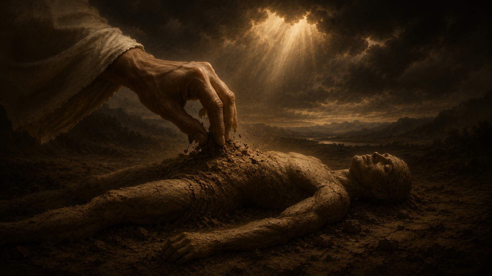

Um estudo bíblico sobre a origem do ser humano, a entrada do pecado no mundo, suas consequências eternas, e a esperança que veio através da cruz.
"De que vale ao homem ganhar o mundo inteiro e perder a sua alma?" Antes de entendermos para onde vamos, precisamos compreender de onde viemos — e por que tudo deu errado.
A história da humanidade não começa em uma caverna nem em um acaso cósmico. Começa nas mãos de Deus, em um jardim, com um sopro de vida. Mas em poucas páginas do Gênesis, a coroa da criação é arrancada da cabeça do homem, e a sombra do pecado se estende sobre toda a história. Esta especialidade percorre esse caminho — da glória da criação à promessa do Redentor.
A vida humana tem uma origem clara e revelada nas Escrituras: Deus. Não somos resultado de um processo aleatório, mas o ápice intencional da Criação. No sexto dia, depois de tudo o que existia, Deus criou o ser humano — homem e mulher — à Sua própria imagem e semelhança.
O material foi simples e profundo: o pó da terra. Sobre essa matéria inerte, Deus soprou o fôlego de vida, e o homem se tornou alma vivente. Não recebemos uma alma — nos tornamos uma. Corpo + fôlego = ser vivo.
A doutrina adventista compreende o ser humano como uma unidade indivisível. Não somos um corpo que tem uma alma — somos uma alma viva. Quando o fôlego retorna a Deus, a pessoa deixa de existir conscientemente até a ressurreição.
Adão — do hebraico adamah, "terra vermelha". O próprio nome é uma lembrança da origem.
Neshamá — o "fôlego de vida". Não é uma essência imortal, mas o sopro que sustenta a existência.
Nephesh — "alma vivente". Designa o ser inteiro, e não uma parte separada do corpo.

Adão e Eva foram colocados em um jardim perfeito, com acesso à Árvore da Vida, cujo fruto sustentaria sua existência eternamente. A imortalidade não era uma propriedade deles — era um presente condicional, dependente da obediência ao Criador.
Quando escolheram desobedecer, perderam o acesso à Árvore da Vida — e com ele, a condição de imortalidade. Deus mesmo declarou o porquê:
Por amor, Deus os impediu de viver eternamente em um estado pecaminoso. A morte se tornou, paradoxalmente, uma misericórdia — um sono temporário até a redenção.
O pecado não é apenas um "deslize moral". A Bíblia o define com precisão cirúrgica em três dimensões.
"Todo aquele que pratica o pecado também transgride a lei, porque o pecado é a transgressão da lei."
— 1 João 3:4
"Aquele, pois, que sabe que deve fazer o bem e não o faz nisso está pecando."
— Tiago 4:17
"Tudo o que não provém de fé é pecado."
— Romanos 14:23
Pecar é, portanto, mais do que fazer algo errado: é quebrar o relacionamento com Deus. É escolher o próprio caminho em vez do d'Ele — seja por ação, omissão, ou desconfiança. É a separação voluntária entre a criatura e o Criador.
No Éden, a serpente proferiu quatro palavras que ecoam até hoje em quase todas as religiões do mundo:
"Certamente não morrereis."Gênesis 3:4
Esta é, segundo a teologia adventista, a primeira mentira — a raiz de todo o engano espiritual subsequente. Dela nasceram doutrinas que afirmam que o ser humano possui uma alma naturalmente imortal, que sobrevive à morte, e que vai imediatamente para o céu, o inferno ou o purgatório.
A Bíblia, porém, é categórica: somente Deus é, por natureza, imortal.
A imortalidade humana é uma dádiva futura, concedida aos salvos no retorno de Cristo (1 Coríntios 15:51-54). Até lá, os mortos "dormem" (João 11:11-14), sem consciência, aguardando a ressurreição.
A Escritura não suaviza a gravidade do pecado. Sua consequência é universal, inevitável e definitiva — exceto pela intervenção divina.
Note a precisão da linguagem bíblica: é a alma que morre — não apenas o corpo. Isso confirma que o ser humano é uma unidade, e que a morte é real, não uma "transição para outra vida". Sem Cristo, a morte é o ponto final.
Mas o texto também traz o contraste glorioso: enquanto o pecado paga um salário (a morte, algo que merecemos), Deus dá um presente (a vida eterna, algo imerecido). É a economia do Evangelho.
"E o testemunho é este: que Deus nos deu a vida eterna; e esta vida está em seu Filho. Quem tem o Filho tem a vida; quem não tem o Filho de Deus não tem a vida."
Onde abundou o pecado, superabundou a graça. Diante do problema que o homem criou, Deus mesmo apresentou a solução — não com palavras, mas com Seu próprio Filho.
"Porque Deus amou ao mundo de tal maneira que deu o seu Filho unigênito, para que todo aquele que nele crê não pereça, mas tenha a vida eterna." João 3:16
Jesus Cristo veio ao mundo, viveu uma vida sem pecado, e na cruz pagou o salário que nós devíamos. Sua morte substituiu a nossa. Sua ressurreição garantiu a nossa. Aquele que crê n'Ele recebe, por graça, o que jamais poderia conquistar por mérito: a vida eterna.
Conhecer essa verdade não é privilégio — é responsabilidade. Um dos requisitos desta especialidade é compartilhar com um amigo o que Deus fez para resolver o problema do pecado.
Pode ser uma conversa, uma carta, uma mensagem, um momento ao redor de uma fogueira. O essencial é não guardar para si a maior notícia já contada.
O último requisito convida o desbravador a demonstrar de forma prática os elementos que Deus utilizou para criar o ser humano. Uma ideia para a unidade:
Apresente um punhado de terra vermelha em um recipiente. Explique que essa é a matéria-prima escolhida por Deus — humilde, comum, sem valor próprio.
Modele uma forma humana simples em argila enquanto fala. Mostre que fomos formados, não fabricados: cada detalhe foi pensado com cuidado.
Sopre suavemente sobre a figura. Esse é o momento decisivo: sem o sopro de Deus, somos apenas barro. Com ele, somos alma vivente.
Coloque um pequeno espelho ao lado da figura: somos a única criação feita à imagem de Deus. Capazes de amar, pensar, escolher e adorar.
Cena 1 — O Jardim. Um narrador descreve o sexto dia. Um desbravador representa Adão, deitado no chão. Outro, vestido de branco, encena o ato de soprar — Adão se levanta, maravilhado.
Cena 2 — A Mentira. Aparece a serpente (alguém com tecido escuro) sussurrando: "Certamente não morrereis…". Adão e Eva olham para uma fruta, hesitam, comem. A luz diminui.
Cena 3 — A Promessa. Surge uma cruz iluminada. O narrador lê João 3:16. Os desbravadores se aproximam da cruz, simbolizando a aceitação da salvação. A luz volta.
Encerramento. O grupo recita junto 1 João 5:11-12. Tudo termina com um cântico — talvez "Vem, Senhor Jesus" ou "Cristo é a Resposta".
Estudos arqueológicos mostram que muitas regiões da Mesopotâmia e do Oriente Médio possuem solo avermelhado, rico em ferro. O mesmo ferro que circula em nosso sangue. A ciência confirma o que o Gênesis sussurra: somos literalmente feitos do pó da terra.
A primeira coisa que um recém-nascido faz é inspirar. A última coisa que fazemos ao morrer é expirar. Toda a vida humana está contida entre dois sopros — uma lembrança constante de quem nos sustenta.
A Árvore da Vida, perdida no Éden, reaparece em Apocalipse 22:2 — no centro da Nova Jerusalém. A história bíblica é circular: o que perdemos no princípio, recuperamos no fim, por meio de Cristo.
Jesus chamou a morte de Lázaro de "sono" (João 11:11). Esse é o entendimento adventista: os mortos descansam inconscientes até a ressurreição. Nenhum sofrimento eterno, nenhuma vigilância sobre os vivos — apenas o aguardar do grande Dia.
Se o pecado é a transgressão da Lei, e a Lei se resume em amar a Deus e ao próximo (Mateus 22:37-40), então pecar é, no fundo, deixar de amar. A santidade não é regra fria — é amor encarnado.
Na cruz, Jesus — o único que merecia viver para sempre — escolheu morrer, para que nós — que merecíamos morrer — pudéssemos viver para sempre. É a maior troca da história do universo.
A morte foi a sombra que o pecado lançou sobre nós. A ressurreição é a luz que Cristo lançou sobre a morte. E para quem crê, há um amanhã onde os túmulos se abrirão, onde o pó se erguerá glorioso, e onde o fôlego de Deus jamais deixará nossas narinas.
"Eis aqui um mistério: nem todos dormiremos, mas transformados seremos, num momento, num abrir e fechar de olhos, ante a última trombeta… e os mortos ressuscitarão incorruptíveis." 1 Coríntios 15:51-52
Maranata — Vem, Senhor Jesus.